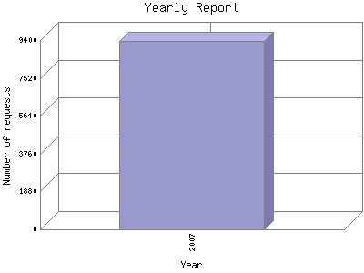

Analog 5.24
Analog 5.24 Report Magic for Analog 2.13
Report Magic for Analog 2.13The Yearly Report shows total activity on your site for each calendar year.
Remember that each page hit can result in several server requests as the images
for each page are loaded.
Note: Most likely, the first and last years
will not represent a complete year's worth of data, resulting in lower hits.

| Year | Number of requests | Percentage of the requests | |
|---|---|---|---|
| 1. | 2007 | 9,338 | 100% |
Most active year 2007 : 9,338 requests handled.
Yearly average: 9338 requests handled.
This report was generated on February 18, 2007 02:24.
Report time frame February 4, 2007 20:17 to February 18, 2007 03:34.
| Web statistics report produced by: | |
| Analog 5.24 | Report Magic for Analog 2.13 |